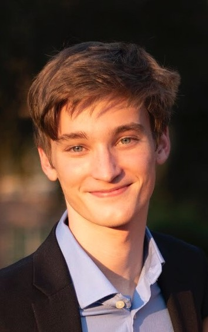
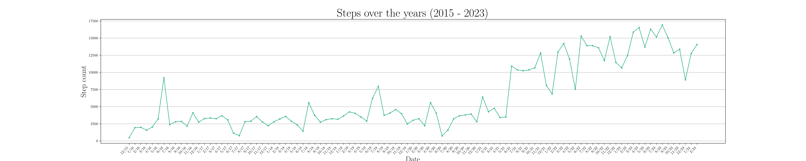

NOTE: I am trying a new (real) format!!! There are probably some design flaws at the moment.
Email: jrp24@sas.upenn.edu or
send
Github: (link)
Google Scholar: (link)
ORCiD: (link)
CV: (link)
Biochemistry, Biology
Vagelos Molecular Life Sciences Scholar (link)
Vagelos Challenge Award Winner (link)
Lab I work in: Song Lab at the Children's Hospital of Philadelphia
Favorite courses (all time): phys3364, biol3310
Courses I TA: phys3364, biol3310
Faculty influential to me:
Dr. Yuanquan Song,
Dr. Bill Ashmanskas,
Dr. Yoichiro Mori,
Dr. Iahn Cajigas,
Dr. Brian Litt
Brain-computer interfaces, neural regeneration, spinal cord injury, technology in neurosurgery
Favorite papers of 2023 (in order):
1,
2,
3,
4,
5
Shannon Trombley*, Jackson Powell*, Pavi Guttipatti*, Andrew Matamoros, Xiaohui Lin, Tristan O'Harrow, Tobias Steinschaden, Leann Miles, Qin Wang, Shuchao Wang, Jingyun Qiu, Qingyang Li, Feng Li, and Yuanquan Song. Glia instruct axon regeneration via a ternary modulation of neuronal calcium channels in Drosophila. Nature
Communications, Oct. 14, 2023. DOI: https://doi.org/10.1038/s41467-023-42306-2
*Equally contributing
Leann Miles, Jackson Powell, Casey Kozak, and Yuanquan Song. Mechanosensitive Ion Channels, Axonal Growth, and Regeneration. The Neuroscientist, Cover article, Aug. 29, 2023. DOI: https://doi.org/10.1177/10738584221088575
Accepted: Jackson Powell, Tobias Steinschaden, Rose Horowitz, Yuanquan Song. Inciting the calcium channels, peripheral glia’s tug-of-war on axon regeneration. Accepted at Neural Regeneration Research.
To Be Resubmitted: Qin Wang, Leanne Miles, Shuo Wang, Harun N. Noristani, Ernest J. Monahan Vargas, Jackson Powell, Sean J O’Rourke-Ibach, Shuxin Li, Yuanquan Song. Targeting and anchoring the mechanosensitive ion channel Piezo to facilitate its inhibition of axon regeneration. This work was recently rejected, and we are working to resubmit soon.
Publications (non-peer reviewed)Keren Bismuth, Vandana Sharma, Jackson Powell, ..., John M. Dedyo. Historical introductions. Science, Oct. 6, 2023. DOI: https://doi.org/10.1126/science.adk8769 Ashley Barbara Heim, ..., Jackson Powell, ..., Anna Uzonyi. AI in search of human help. Science, July 14, 2023. DOI: https://doi.org/10.1126/science.adi8740 Garima Singh, ..., Jackson Powell, Sai Sarnala. The fruits of failure. Science, Jan. 5, 2023. DOI: https://doi.org/10.1126/science.adg1443 Rui Tang, ..., Jackson Powell, Samuel Nathan Kirshner. When internships disappoint. Science, Oct. 6, 2022. DOI: https://doi.org/10.1126/science.ade6397 Jackson Powell. Puzzling Topics in Neuroscience. UPenn Career Services, Jan. 19, 2022. (link) Jackson Powell. Review: Harakiri. Penn Moviegoer, Nov. 18, 2021. (link) |
FeaturesPeering beyond the haze of alien worlds, and how failures help us make new discoveries. Science Magazine Podcast (Jan. 12, 2023) (link)
|
PresentationsJackson Powell. The mechanosensitive ion channel Piezo’s role in the growth cone. Center for Undergraduate Research & Fellowships Symposium, (Sept. 18, 2023), (link, pdf) Jackson Powell. The mechanosensitive ion channel Piezo’s role in the growth cone. Vagelos Molecular Life Sciences, 10 mins. (June 27, 2023) Jackson Powell. Glial control of axon regeneration through voltage gated calcium channels. Developmental Neuroscience, 25 mins. (Nov. 16, 2022) Jackson Powell. Glial control of axon regeneration through neuronal voltage gated calcium channels. Vagelos Molecular Life Sciences, 10 mins. (July 4, 2022) Jackson Powell* & Kevin Bryan*. The Novel Role of Trpml and Btv in Drosophila
Mechanosensation and Decision Making. Children’s Hospital of Philadelphia Poster
Symposium, (May 25, 2022) (pdf) Jackson Powell. Glial control of neuron regeneration. Joint CCMT Lab Meeting, 30 mins. (April 27, 2022) Jackson Powell*, Alec Fernandes*, Arianna Zhai*. The Venom of the Dolomedes triton: functional effects on allopatric and sympatric prey items. Young Scholars Program Symposium. (July 26, 2019) (link, pdf) Song Lab Meetings: Jackson Powell, 60-90 mins each. July 6, 2021; Oct. 12, 2021; Feb. 28, 2022; Aug. 2, 2022; Jan. 10, 2023; June 20, 2023. |
Documenting some of the most interesting papers (to me)
Lorach, H., ... Courtine, G. Walking naturally after spinal cord injury using a brain-spine interface. Nature. May 24, 2023. https://doi.org/10.1038/s41586-023-06094-5
Perhaps the greatest benefit of this work is it put brain-computer interfaces on many people's radars. It allowed a patient to begin walking through an integrated brain-spine interface.
Willet, F., ... Henderson, J. A high-performance speech neuroprosthesis. Nature. August 23, 2023. https://doi.org/10.1038/s41586-023-06377-x
Metzger, S., ... Chang, E. A high-performance neuroprosthesis for speech decoding and avatar control. Nature. August 23, 2023. https://doi.org/10.1038/s41586-023-06443-4
These works marry two ever improving fields: machine learning and brain-computer interfaces. They demonstrate the use of BCIs beyond neural repair, and instead in diseases that might otherwise be described as ``without recourse,'' restoring locked-in patient's ability to communicate.
Squair, J., ... Courtine, G., Anderson, M. Recovery of walking after paralysis by regenerating characterized neurons to their natural target region. Science. September 21, 2023.https://doi.org/10.1126/science.adi6412
Prior works showed it is possible to induce regeneration past an SCI injury site through a cocktail of regenerative factors. Fascinatingly, despite this, no functional recovery was found. This work, however, finds functional recovery through improved chemoattractive means, which is hypothesized to allow neuronal connections to form as neurons grow past the injury site.
Milekovic, T., ... Courtine, G. A spinal cord neuroprosthesis for locomotor deficits due to Parkinson's disease. Nature Medicine. November 6, 2023. https://doi.org/10.1038/s41591-023-02584-1
The impressiveness is not in the results, per se, but rather in the absolutely incredible ability to pull this off. They combined both spinal cord and deep brain stimulation together to provide better treatment for a Parkinson's Disease patient. The combo improved both tremor and gait impairments.
2024 starts off very strong in the field of neurodegeneration:
Banerjee, G., ..., Collinge, J. Iatrogenic Alzheimer's disease in recipients of cadaveric pituitary-derived growth hormone. Nature Medicine. January 29, 2024. https://doi.org/10.1038/s41591-023-02729-2
The prion-like properties of neurodegenerative diseases are frequently studied. Many years ago, Dr. Virginia Lee showed that α-syn in Parkinson's Disease spreads. She presented this work at a prion conference, to which prion disease researchers resoundingly stated that PD is not a prion disease because it is not transmissible. One of the prime ways that prions are spread from human to human is through cadavers, such as through dura mater grafting and hormone (particularly growth hormone) replacement therapy. Now, the transmission of Alzheimer's through the same means has been identified.
Mätlik, K., ..., Heintz, N. Cell-type-specific CAG repeat expansions and toxicity of mutant Huntingtin in human striatum and cerebellum. Nature Genetics. January 30, 2024. https://www.nature.com/articles/s41588-024-01653-6
In December of 2023, Dr. Bonini showed us the data from this work and described that it is from a talk she attended in 2019. She mentioned being extremely excited for when the work is finally published—and here it is. In short, CAG repeats exhibit cell-specific instability, leading to selective neuronal death in Huntington's disease.
What I listen to:
Spotify: (link) :)
Tracking my steps over the years:

Current favorite... (as of 03/21/2024)